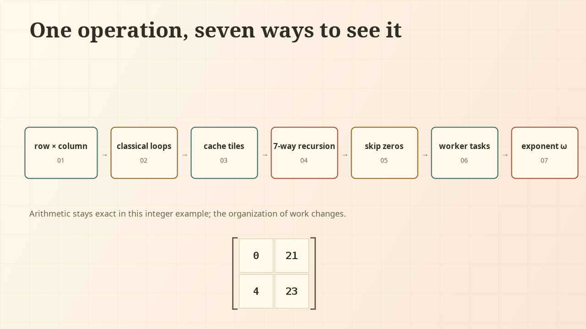

Inside matrix
multiplicationA visual investigation with Java
What actually happens when a computer multiplies two matrices—and how can Java let us see the computation rather than merely its final answer?
A matrix is a rectangular array of numbers. You can multiply two tiny matrices on paper; at scale, the same rule becomes millions of carefully organized arithmetic operations. Java is a general-purpose programming language. It lets us write that rule explicitly, execute it, and inspect the intermediate values a textbook usually leaves invisible.
Matrices organize scientific computing, graphics, statistics, machine learning, and engineering. Here, we follow one operation from hand calculation to Java arrays and loops, geometry, large-scale computation, memory, parallelism, Strassen, and finally complexity theory.
The Matrix Theatre
One row. One column. A number coming into being.
c[0][0] += a[0][k] * b[k][0]Loading the Java trace. The worked result is [[0, 21], [4, 23]].
a[i][k] * b[k][j]Begin with Play or advance one step at a time. Outlines, labels, and positions repeat the color cues. Motion is illustrative; each product and partial sum comes from Java’s actual classical kernel.
The rule you just watched
A row runs horizontally; a column runs vertically. The entry \(A_{12}=-1\) is in row 1, column 2. Here we use one-based subscripts for mathematics and zero-based brackets for Java.
Multiplying matrices means taking every row of A with every column of B. Multiply corresponding entries, then add the products. This operation on two lists is their dot product.
First row × second column
2 × 5 + (−1) × (−2) + 3 × 3
10 + 2 + 9 = 21
C₁₂ ↔ c[0][1] ↔ stored value 21The inner dimensions agree because a row and column must have the same length. In general, an \(m\times p\) matrix times a \(p\times n\) matrix produces an \(m\times n\) matrix:
Keep the row \(i\) and column \(j\) fixed. Let \(k\) walk along both lists. The summation sign means “add all those products.” This is ordinary matrix multiplication, not entry-by-entry multiplication.
What Java sees
The numbers do not change when a mathematical matrix becomes a Java array. Their addresses do. Select any entry, then unfold its representation.
Same six values. A new way to address them.
Mathematical A₁₁ = 2 becomes A[0][0] = 2. Java counts from zero.
double[][] A→A[0] → double[3]·A[1] → double[3]A[0] selects the first row; A[0][1] selects its second value. A double is Java’s 64-bit floating-point type.
A Java double[][] is an array of references to row arrays. Rows may have different lengths, so our methods check that the inputs are rectangular and compatible. The visual grid does not imply one contiguous allocation.
// From LearningExamples.main; executable Java.
double[][] A = {{2, -1, 3}, {4, 0, 1}};
double[][] B = {{1, 5}, {2, -2}, {0, 3}};
double[][] C = multiply(A, B);
System.out.println(Arrays.deepToString(C));
// [[0.0, 21.0], [4.0, 23.0]]The complete LearningExamples class includes the import, method, validation, and main entry point. The trace kernels also retain small int examples whose values stay within range; Java integers can overflow on larger values.
Three loops, three different jobs
The detached row and column become the inner loop. The two outer loops decide where its answer belongs. Step through the execution and watch the indices, matrix outlines, and code move together.
double[][] c = new double[a.length][b[0].length];
for (int i = 0; i < a.length; i++) {
for (int j = 0; j < b[0].length; j++) {
for (int k = 0; k < b.length; k++) {
c[i][j] += a[i][k] * b[k][j];
}
}
}
return c;Loading Java execution states…
c[i][j] += …The array allocation initializes each double to 0.0. Every += reads the current entry, adds a product, and writes the new partial value. For this \(2\times3\) by \(3\times2\) example, the method performs 12 multiplications and 12 additions, including adding the first product to zero.
Understand what
multiplication means.
The same row–column rule can move an entire coordinate system.
A matrix is also an action
For a vector \(x=(x_1,x_2)\), multiplying \(Ax\) produces a new vector. Each output coordinate is a row–vector dot product. Equivalently, the columns of \(A\) tell us where the two unit basis vectors go: \(Ax=x_1A_{\cdot1}+x_2A_{\cdot2}\).
This links arithmetic to geometry. Lines through the origin remain lines through the origin, and linear combinations are preserved. In Java, a column vector can simply be a \(2\times1\) array passed to the same multiplication method.
Two actions become one matrix
Let \(B\) rotate by 90° counterclockwise and let \(A\) shear horizontally. With column vectors, the rightmost matrix acts first. First \(B\), then \(A\), is \(AB\).
Follow x = (1, 1) through the plane
Java-computed endpointsSolid arrow: transformed x. Dashed arrow: original x. Labeled e₁ and e₂ track the basis. Intermediate motion interpolates between the exact Java-computed states; it illustrates the action, not numerical integration.
For this vector, \(ABx=(0,1)\) while \(BAx=(-1,2)\). Reversing the order changes the result. And because \(A(Bx)=(AB)x\) for every vector, multiplication encodes composition. Expanding the \(i\)-th coordinate gives exactly \(\sum_k A_{ik}B_{kj}\) as the coefficient of \(x_j\)—the rule from Act I.
Make multiplication
work at scale.
Keep the rule. Change the organization of the work.
When a few products become a field
Each output entry needs \(n\) products. There are \(n^2\) output entries. The third loop gives the third factor: \(n^2\times n=n^3\). Double the width and height, and the multiplication count grows eightfold.
Zoom out of the small matrix
Exact counts · sampled pulsesThe picture samples a field of work; the counts are exact and generated by Java. The browser never runs a large matrix product for this effect. For an \(n\times n\) product, the literal Java kernel also performs \(n^3\) additions to its zero-initialized result. A dot-product implementation starting from its first term needs \(n^2(n-1)\) additions.
i → j → kKeep useful numbers nearby
A cook keeps frequently used ingredients on the counter. A blocked algorithm does something similar: work on a small group of entries long enough to reuse them before fetching another group.
The cell grid becomes a tile grid
Zoom out: a 16×16 field.
Group neighboring cells into 4×4 tiles.
Schematic layout above; actual Java values below in a 4×4 example with 2×2 tiles.
A tile + B tilenearby entriesupdate C tilefor (int ii = 0; ii < rows; ii += blockSize)
for (int kk = 0; kk < shared; kk += blockSize)
for (int jj = 0; jj < cols; jj += blockSize)
for (int i = ii; i < Math.min(ii + blockSize, rows); i++)
for (int k = kk; k < Math.min(kk + blockSize, shared); k++) {
int aik = a[i][k];
for (int j = jj; j < Math.min(jj + blockSize, cols); j++)
c[i][j] += aik * b[k][j];
}Locality is the useful idea
Spatial locality uses nearby entries; temporal locality reuses the same entry soon. The inner j loop walks along Java row arrays, reusing aik. The tiles help keep a small working set close to execution resources.
Movement has a cost
With ideal resident \(b\times b\) tiles, \(b^3\) products reuse about \(3b^2\) entries. A simplified tiled model suggests \(O(n^3/b+n^2)\) element transfers when the working set fits. Actual caches, row objects, packing, and loop order affect traffic.
A flat double[] can encode a matrix using a[i * cols + j], making row-major layout explicit. The current kernels use arrays of rows. Java does not explicitly “load the cache”: the hierarchy animation is a model of locality, not a record of cache misses.
Sometimes the best product is one you skip
When most entries are zero, the dense loops spend time on contributions known to vanish. Start with the full matrix, then let the irrelevant paths recede.
36 positions. Only 7 nonzero values.
Compressed sparse row (CSR) stores values, column indices, and offsets into each row. For example, rowOffsets[3]=3 and rowOffsets[4]=5 say that zero-based row 3 uses stored positions 3 and 4: \(5\) at column 2 and \(1\) at column 5.
// From MatrixAlgorithms.sparseTimesDense; repeat for each output row i.
for (int p = a.rowOffsets[i]; p < a.rowOffsets[i + 1]; p++) {
int k = a.columnIndices[p], value = a.values[p];
for (int j = 0; j < b[0].length; j++)
c[i][j] += value * b[k][j];
}Against a dense right matrix with \(q\) columns, this kernel uses \(7q\) products instead of \(36q\) for the displayed left matrix. It still allocates a dense result. General sparse-by-sparse multiplication has additional indexing costs, and its result may become dense.
Tiles become independent Java tasks
Give each task its own output tile and the whole shared dimension. The inputs can be read by everyone; no two tasks write the same output entry.
ForkJoinPool · four result tiles
Actual computed results · illustrative schedule// Each RecursiveAction owns r0, c0 and one C tile.
protected void compute() {
for (int i = r0; i < Math.min(r0 + tileSize, a.length); i++)
for (int j = c0; j < Math.min(c0 + tileSize, b[0].length); j++) {
int sum = 0;
for (int k = 0; k < b.length; k++)
sum += a[i][k] * b[k][j];
c[i][j] = sum;
}
}ForkJoinPool pool = new ForkJoinPool(parallelism);
try {
pool.submit(new RecursiveAction() {
protected void compute() {
invokeAll(tasks);
}
}).join();
} finally {
pool.shutdown();
}These are excerpts of the complete parallel method. The lanes represent software tasks, not transistor-level CPU activity. The trace contains values produced by actual ForkJoinPool execution; task-to-lane assignment is a deterministic illustration. Real workers can steal tasks and finish in a different order.
Eight products.
Then, unexpectedly, seven.
Blocking grouped the arithmetic. Parallelism distributed it. Strassen changes how much multiplication is needed. First split the matrices into four quadrants and watch the ordinary eight branches reorganize.
The recursion theatre
1969 · Strassen’s ideaFor \(A=\left[\begin{smallmatrix}a&b\\c&d\end{smallmatrix}\right]\) and \(B=\left[\begin{smallmatrix}e&f\\g&h\end{smallmatrix}\right]\), ordinary multiplication needs \(ae,bg,af,bh,ce,dg,cf,dh\). Strassen instead multiplies seven pairs of sums or differences, then recombines them. At larger sizes these letters stand for whole blocks.
The seven products and their recombination
Each recursive call has half the width, with seven children instead of eight. Additions and subtractions cost \(O(n^2)\) per node; the recurrence is \(T(n)=7T(n/2)+O(n^2)\).
Java correctness comparison is loading…
// From strassenRecursive; every product recurses.
int[][] m1 = strassenRecursive(
add(a11, a22), add(b11, b22));
int[][] m2 = strassenRecursive(
add(a21, a22), b11);
// … five more recursive products …
int[][] c11 = add(subtract(add(m1, m4), m5), m7);
int[][] c12 = add(m3, m5);
int[][] c21 = add(m2, m4);
int[][] c22 = add(subtract(add(m1, m3), m2), m6);The supplied Java implementation handles equal square power-of-two sizes, down to scalar base cases. Practical variants need cutoffs to conventional kernels, attention to padding and temporary allocations, and rounding-error analysis. Seven branches are a mathematical saving, not a promise of faster execution for every size.
A smaller exponent is not a stopwatch
Linear bar lengths compare exact leaf counts for recursion to scalars. They omit additions, allocations, data transfers, JVM compilation, and task overhead. A Java benchmark needs warm-up, repeated measurements, fixed inputs, and recorded settings; timing a single tiny call with System.nanoTime() is not enough.
The deeper problem.
What changes when numbers are finite—and when algorithms are allowed to be radically different?
The partial sum is a machine number
Return to the accumulator in Act I. Java double arithmetic stores finite-precision binary values. Many decimal fractions have no exact representation, and operations round. Even rearranging a dot product can change its last bits.
Same terms, different summation order
// Executed in LearningExamples.sum, using Java double.
double result = 0;
for (int k = 0; k < values.length; k++)
result += values[reverse ? values.length - 1 - k : k];The trace records 0.6000000000000001 forward and 0.6 backward for \([0.1,0.2,0.3]\). A sharper cancellation example gives (1e16 + -1e16) + 1 = 1.0 but 1e16 + (-1e16 + 1) = 0.0. The small term can disappear when added at a much larger scale.
The parallel kernel above keeps each entry’s \(k\)-order fixed, so changing which worker owns a tile does not itself reorder that entry’s sum. Splitting a dot product among workers and reducing partial sums could. Strassen also introduces different intermediate expressions. Floating-point comparisons therefore usually need a justified error tolerance, not exact equality. The integer tests here establish small-example algebraic correctness, not numerical stability for arbitrary doubles.
From loops to a bilinear map
Strassen’s seven products suggest a different question: can we describe all outputs using fewer products of carefully chosen linear combinations of inputs?
Open the bilinear and tensor viewpoint
Over a field \(\mathbb F\), let \(U=\mathbb F^{m\times p}\), \(V=\mathbb F^{p\times n}\), and \(W=\mathbb F^{m\times n}\). The map \(\mu:U\times V\to W\), \(\mu(A,B)=AB\), is linear separately in \(A\) and \(B\), hence bilinear. It is generally not linear in the pair jointly.
αᵣ(A), βᵣ(B)add / scale input entriesαᵣ(A) βᵣ(B)the costly bilinear stepsΣᵣ αᵣ(A)βᵣ(B) Wᵣrecover every output entryHere \(a_{ik}^{*}\) and \(b_{kj}^{*}\) extract input coordinates and \(E_{ij}\) is an output basis matrix. The tensor encodes which pair of input coordinates contributes to which output coordinate. An \(R\)-term decomposition into simple tensors corresponds to a bilinear algorithm using \(R\) products of linear forms; additions and scalar multiplications remain additional work.
For \(2\times2\) matrices, the coordinate expansion has eight terms; Strassen gives a seven-term decomposition. Recursing this fixed construction gives the exponent \(\log_2 7\). Border rank allows a tensor to arise as a limit (more precisely, through an appropriate algebraic degeneration) of tensors of bounded rank. Such degenerations are algebraic tools, not instructions to substitute a tiny floating-point parameter into Java.
Tensor powers, degenerations, and asymptotic combinations of many products connect this viewpoint to exponent bounds. Exact rank, border rank, and asymptotic exponent are different notions. This panel gives a bridge to algebraic complexity, not a full treatment; see the primary references below.
How close can the exponent get to two?
The matrix multiplication exponent \(\omega\) is the infimum of exponents \(\tau\) for which square matrices over a fixed field can be multiplied using \(O(n^{\tau+\varepsilon})\) arithmetic operations for every \(\varepsilon>0\). This is an algebraic model, distinct from bit complexity, memory traffic, or measured Java runtime.
The August 17, 2026 preprint by Dupont and collaborators reports \(\omega<2.371177\), improving the previous bound \(2.371339\). This exact statement is from the version 1 primary record, checked for this revision. It is a reported asymptotic upper bound, not an exact value of \(\omega\), and not a claim about this Java implementation.
The elementary lower bound is \(2\); explicit output already contains \(n^2\) coordinates. Whether \(\omega=2\) remains an open question. The interval between a lower bound and an upper bound expresses what is not yet known.
Practical algorithm design
Choose layouts, kernel sizes, numerical behavior, vectorization, and concurrency to minimize actual cost on available machines. Tuned classical kernels remain central; Strassen-like variants can help in appropriate regimes.
Asymptotic complexity research
Prove that some algorithm achieves a smaller growth exponent in an idealized model. Large constants and enormous crossover sizes can separate this achievement from a useful routine at everyday sizes.
One computation, seen all the way through
Follow the same numerical particles as they become an entry, a matrix, a program, a field of work, and a question about what computation can achieve.
A matrix product is more than its answer. It is a structure of dependencies, an order of arithmetic, a movement of data, and a choice of algorithm. Java makes those choices explicit enough to inspect.
Watch the Java-rendered film & see the static recap

Java computes. The browser shows.
The classical and blocked kernels emit their own arithmetic and tile states. Java also generates geometric endpoints, scale counts, CSR arrays, precision examples, Strassen products, and values computed by real parallel tasks. Browser JavaScript lays out and animates those data. Worker schedules and memory movement are explicitly illustrative.
Rebuild from the repository root with a JDK (17 or newer) and ffmpeg:
./research/java-matrix-multiplication/build-media.shPreview from the repository root:
python3 -m http.server 8001 --bind 127.0.0.1Open http://127.0.0.1:8001/research/java-matrix-multiplication.html. HTTP is needed to fetch the traces. The README documents the build and checks. There is no framework, site build, or server-side application.
Primary & technical references
- Volker Strassen, “Gaussian Elimination is Not Optimal,” Numerische Mathematik 13 (1969), 354–356. Original paper.
- Oracle, Java Language Specification, Chapter 10: Arrays and floating-point types; Java SE 21 ForkJoinPool API.
- Josh Alman et al., “More Asymmetry Yields Faster Matrix Multiplication.” Primary paper and algebraic-complexity background.
- Emilien Dupont et al., “Improving the matrix multiplication exponent with modern optimization and AlphaEvolve,” August 17, 2026. arXiv:2608.16884v1. Reported bound checked September 23, 2026.
Created September 22, 2026 · redesigned September 23, 2026 · Codex on Linux · original implementation: GPT-5.6 Sol · design and implementation revision: GPT-6